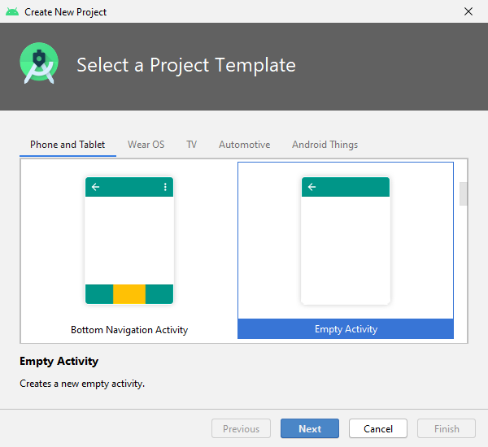
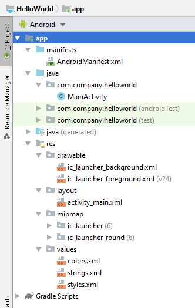
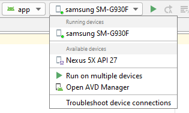
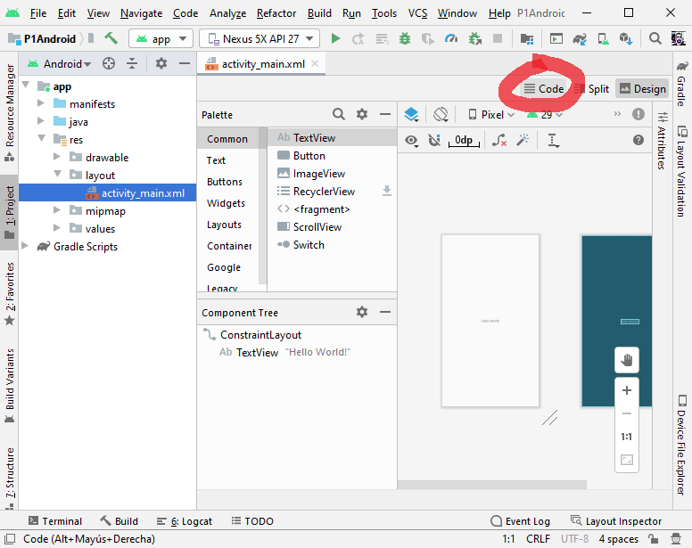
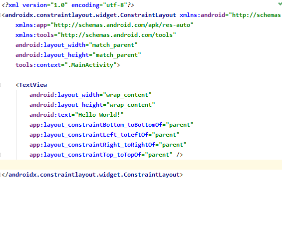

Esta práctica te enseña cómo crear tu primera aplicación para Android. Aprenderás cómo crear un proyecto de Android con Android Studio, y ejecutar una versión depurable de la aplicación.
Antes de comenzar, descarga e instala Android Studio
Descomprime el zip y ejecuta el lanzador studio.sh
- En Android Studio, crea un nuevo proyecto:
- Si todavía no has abierto un proyecto, en la pantalla de bienvenida, haz clic en
Nuevo proyecto.
- Si has abierto un proyecto, ve a
File>New>New project.
- Elije la plantilla para la
Activity(pantalla) principal de la App. Para esta práctica elije "Empty Activity".

- Rellena los campos de la pantalla.

- Minimum SDK: es la versión de mínima de Android que deben tener los dispositivos para poder ejecutar la app. Para soportar el máximo de dispositivos que sea posible, se debe establecer a la versión más baja posible. Sin embargo, cuanto más baja es la versión menos características de android modernas puede utilizar la app..
El proyecto creado es una aplicación básica de "Hello World" que contiene algunos archivos por defecto. Veamos los más importantes:

El archivo de manifiesto describe las características fundamentales de la aplicación y define cada uno de sus componentes. Aquí especificaremos las Activities que tiene nuestra app y los permisos que requiere (Cámara, Contactos, Internet, etc.) |
Contiene la definición de clase para la Activity (pantalla) principal. En este fichero programaremos el comportamiento de esta Activity. |
Este archivo XML define el layout de la actividad, es decir los elementos (widgets) que tiene la pantalla. Por defecto, contiene un elemento |
Android Studio utiliza Gradle para compilar y construir la aplicación. Hay un archivo
Más adelante usaremos este fichero para instalar nuevas bibliotecas y componentes para nuestra App, en el apartado |
Veamos también los subdirectorios
Directorio de imágenes.
Directorio para los archivos que definen la interfaz de usuario de la aplicación, como
Contiene los iconos Lanzadores.
Directorio para otros archivos XML que contienen una colección de recursos. En el archivo En el archivo En el archivo |
Este es el aspecto de la App "Hello World":

Ejecutar en un dispositivo real
Configurar el móvil de la siguiente manera:
- Conectar el dispositivo a su equipo de desarrollo con un cable USB.
- Habilitar la depuración USB en el dispositivo móvil, yendo a
Ajustes>Opciones de desarrollador.
Ejecutar la aplicación desde Android Studio de la siguiente manera:
- Selecciona el dispositivo móvil

- Haz clic en Ejecutar
 desde la barra de herramientas.
desde la barra de herramientas.
Android Studio instala la aplicación en el dispositivo conectado y la inicia.
Ejecutar en el emulador
Selecciona el emulador y haz clic en

Si no tienes ningún emulador creado ve a AVD Manager y crea uno:


Selecciona el Hardware y la versión de Android que desees.
En los ficheros XML de la carpeta res/layout se define la disposición de widgets de las pantallas.
Por el momento, en la pantalla activity_main.xml solamente hay un TextView que muestra el texto "Hello world".
Modificaremos esta pantalla para disponer otro TextView que mueste el contador, y también el botón que aumentará este contador.
Para editar los ficheros de layout hay dos formas:
- Modo gráfico: permite arrastrar los widgets de la paleta a la pantalla, y modificar sus atributos.
- Modo código: permite modificar directamente el código XML.
Habitualmente, trabajaremos en modo código:
- Haz doble click sobre el fichero
res/layout/activity_main.xml - Haz click en el icono
 (o también Split...)
(o también Split...)

Añade el TextView para el contador

MainActivity.java